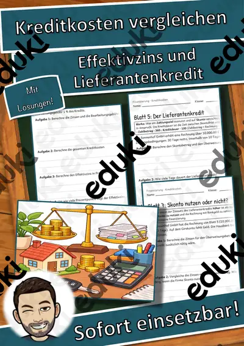
Kreditkosten vergleichen – Arbeitsheft mit Lösungen (BwR 9, Realschule Bayern)
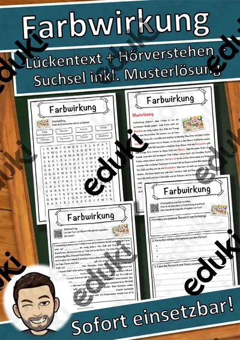
Farbwirkung Lückentext mit Wortspeicher Hörverstehen und Suchsel

Aufbauorganisation – Arbeitsheft mit Lösungen (BwR 9, Realschule Bayern)

Farbton Lückentext mit Wortspeicher Hörverstehen und Suchsel

Unternehmensführung: Aufgaben, Ziele und Leitbild – Arbeitsheft mit Lösungen (BwR 9, Realschule)

Forderungen bewerten – Arbeitsheft mit Lösungen (BwR 9, Realschule Bayern)

Aktiengeschäfte buchen: Kauf, Dividende und Verkauf – Arbeitsheft mit Lösungen (BwR 9, Realschule)

Farbsättigung Lückentext mit Wortspeicher Hörverstehen und Suchsel
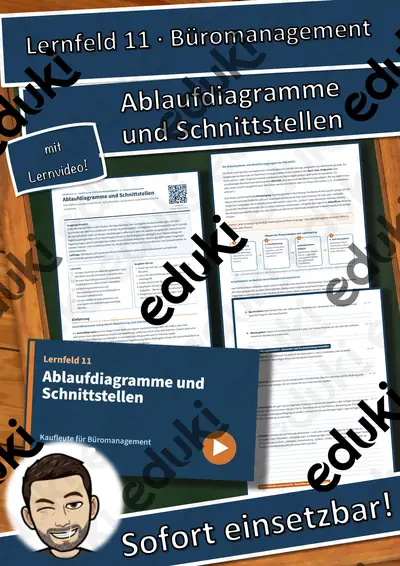
LF 11 Kaufleute für Büromanagement: Ablaufdiagramme und Schnittstellen – Übungen, Lösungen + Lernvideo
LF 13 Bankkaufleute: Kreditwürdigkeit von Firmenkunden: Rating und Kennzahlen – Übungen, Lösungen + Lernvideo

Investition: laufende Aufwendungen buchen – Arbeitsheft mit Lösungen (BwR 9, Realschule Bayern)

Deckungsbeitrag: Entscheidungen im Unternehmen – Arbeitsheft mit Lösungen (BwR 10, Realschule)

Farbe-an-sich-Kontrast Lückentext mit Wortspeicher Hörverstehen und Suchsel

Familiennamen Lückentext mit Wortspeicher Hörverstehen und Suchsel

LF 5 Bankkaufleute: Vorvertragliche Pflichten & Widerruf bei Krediten – Übungen, Lösungen + Lernvideo

Kostenträgerrechnung: Zeit- und Stückrechnung – Arbeitsheft mit Lösungen (BwR 10, Realschule Bayern)
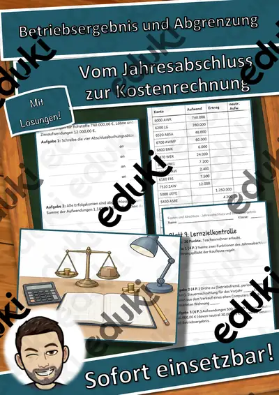
Betriebsergebnis und Abgrenzung – Arbeitsheft mit Lösungen (BwR 10, Realschule Bayern)

Unternehmenskennzahlen: Bilanz und GuV auswerten – Arbeitsheft mit Lösungen (BwR 10, Realschule)
Ewigkeitssonntag Lückentext mit Wortspeicher Hörverstehen und Suchsel

Jahresabschluss – Arbeitsheft mit Lösungen (BwR 10, Realschule Bayern)

LF 3 Industriemechaniker/-in: Kräfte und Drehmomente bei Schrauben – Übungen, Lösungen + Lernvideo

Deckungsbeitrag: die Gewinnschwelle – Arbeitsheft mit Lösungen (BwR 10, Realschule Bayern)

Ethos der Bibel Lückentext mit Wortspeicher Hörverstehen und Suchsel

Himmel und Hölle: Im Wald – Gratis-Probe
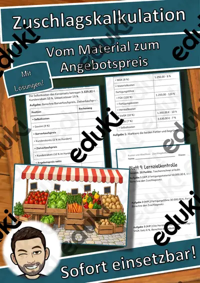
Zuschlagskalkulation: vom Material zum Angebotspreis – Arbeitsheft mit Lösungen (BwR 10, Realschule)
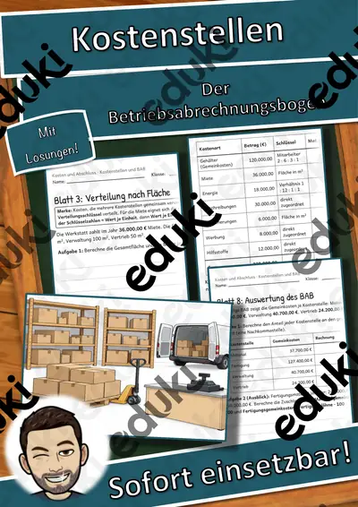
Kostenstellen: der Betriebsabrechnungsbogen – Arbeitsheft mit Lösungen (BwR 10, Realschule Bayern)

Erwartung Lückentext mit Wortspeicher Hörverstehen und Suchsel
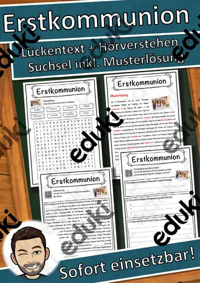
Erstkommunion Lückentext mit Wortspeicher Hörverstehen und Suchsel
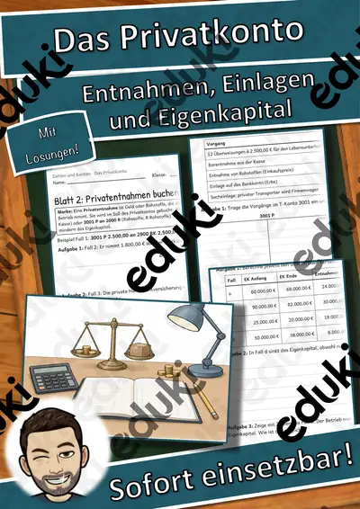
Das Privatkonto: Entnahmen, Einlagen und Eigenkapital – Arbeitsheft mit Lösungen (BwR 9, Realschule)

Darlehen und Kontokorrentkredit – Arbeitsheft mit Lösungen (BwR 9, Realschule Bayern)

Epochengliederung Lückentext mit Wortspeicher Hörverstehen und Suchsel
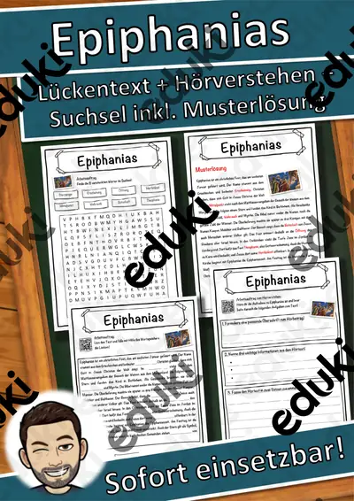
Epiphanias Lückentext mit Wortspeicher Hörverstehen und Suchsel
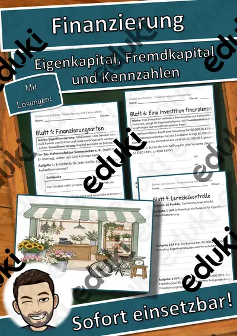
Finanzierung – Arbeitsheft mit Lösungen (BwR 9, Realschule Bayern)

Zahlungsverzug und Forderungen – Arbeitsheft mit Lösungen (BwR 9, Realschule Bayern)

Anlagen buchen: Kauf und Abschreibung – Arbeitsheft mit Lösungen (BwR 9, Realschule Bayern)

Elektronenmikroskop Lückentext mit Wortspeicher Hörverstehen und Suchsel

Bank und Geldanlage: das Bankensystem – Arbeitsheft mit Lösungen (WR 8/9, Realschule Bayern)

Bewerbung: der Berufsausbildungsvertrag – Arbeitsheft mit Lösungen (WR 8/9, Realschule Bayern)

Markt und Preis: Preisbildung und Marktformen – Arbeitsheft mit Lösungen (WR 8/9, Realschule Bayern)

Einzigartigkeit der Erde Lückentext mit Wortspeicher Hörverstehen und Suchsel
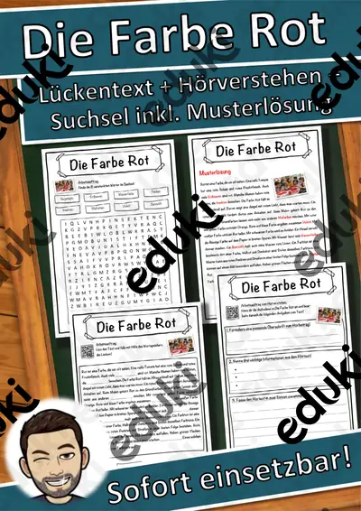
Die Farbe Rot Lückentext mit Wortspeicher Hörverstehen und Suchsel

Geschäftsfähigkeit: der Taschengeldparagraph – Arbeitsheft mit Lösungen (WR 8/9, Realschule Bayern)

Der Kaufvertrag: Abschluss und Erfüllung – Arbeitsheft mit Lösungen (WR 8/9, Realschule Bayern)

Abgaben an den Staat – Arbeitsheft mit Lösungen (BwR 8, Realschule Bayern)

Die Farbe Blau Lückentext mit Wortspeicher Hörverstehen und Suchsel

Computermusik Lückentext mit Wortspeicher Hörverstehen und Suchsel
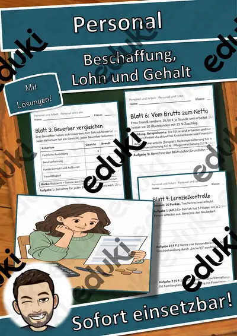
Personal: Beschaffung, Lohn und Gehalt – Arbeitsheft mit Lösungen (BwR 8, Realschule Bayern)

Die optimale Bestellmenge – Arbeitsheft mit Lösungen (BwR 8, Realschule Bayern)
Keine Materialien gefunden – versuch einen anderen Suchbegriff oder Filter.